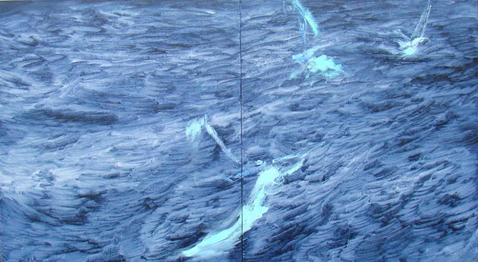

Валерий Песин: «Отношусь к рисованию, как к своего рода поручению»
Валерий Песин родился и вырос в Беларуси, но просит называть себя просто художником, без привязки к какой-либо национальности. Его работы имеются в собрании Белорусского национального музея и Национального центра современного искусства в Минске, но вместо перечисления регалий или наград ему кажется более важным упомянуть, как в советские времена он работал сторожем, слесарем, столяром и дворником. Искусство и творчество – вот, что важно, остальное отвлекает от сути, считает художник. Знакомьтесь, Валера Песин.
Художник Валерий Песин. фото: Юрий Харитонович
Валерий, я честно признаюсь, даже и не задумывалась, что вы белорусский художник. Часто слышу вашу фамилию и вижу работы именно тут в Москве.
Валерий Песин:Я начал ездить в Москву с 1990-х годов. Сначала, чтобы продавать работы на Арбате. Для меня по тем временам это были не маленькие деньги. Такие поездки давали мне средства к существованию. Так я познакомился с коллекционером Михаилом Алшибая (известный московский коллекционер, кардиохирург, прим. Редакции). Помню, именно на Арбате он впервые купил мои работы. А уже 10 лет назад, то есть с середины 2000-х, я понял, что мне нужно иметь свое место в Москве, чтобы встречаться с людьми, работать и хранить картины. Я ехал сюда в надежде, что подружусь с какой-нибудь галереей. Но потом оказалось, что ни одна московская галерея не в состоянии обеспечить художнику регулярный прожиточный минимум. Есть наверное исключения. Может одному, двум, трем какая-нибудь галерея Печерской и может что-то делать () или галерея «Риджина». Но это очень мало для такого большого города, для такого количества художников.
Моя живопись, как мне кажется, не попадает в два главных направления. Нет у меня социальной тематики, и эпатажем никаким я не занимаюсь. Поэтому мое искусство не назовешь актуальным, и оно не интересно галереям Винавода. В салонные галереи тоже не попадаю, так как позолоты, малахита, старательной физической работы, которую любят их клиенты, тоже не чувствуется. В итоге, так никакой галереи для себя я не нашел. Более того, я заметил, что галереи закрываются-открываются регулярно. Так было с многими галереями, с которыми я начинал дружить. Одна из моих любимых была галерея Volga. Мне так нравился ряд художников, которыми они занимались и стиль, который они пропагандировали. Хозяйка галереи, Ольга выглядела очень уверенной и успешной, но и они закрылись. Вот как-то не выживают галереи московские. Пришлось самому всеми делами заниматься, к сожалению. Есть в этом и свои плюсы, конечно. Но от этого всего очень устаешь.
Я ваши работы регулярно вижу в различных интерьерных журналах, а также передачах.
Валерий Песин:Понимаете, так забавно сложилось, что основной интерес к моим картинам именно со стороны декораторов, архитекторов, дизайнеров. Я как-то разговаривал с одним человеком. Его имя вам ничего не скажет, у него была небольшая галерея антикварного искусства. Я вопрос ему задал, может ли он назвать в Москве галерею, попадание в которую было бы мечтой для художника. Есть такие галереи в Берлине или Нью-Йорке. Если они тебя выберут, то ты можешь больше ни о чем не волноваться. Сам факт, что они тебя выбрали, говорит о том, что твоя жизнь устроена. Вот он мне сказал, что: в Москве моду на художника делает не галерея, а среда.
Работы Валеры Песина в интерьере.
Это действительно так. У Никаса была своя среда в времена, когда начали расцветать эти рублевские поселки. У Церетелли – своя среда. И у художника Шилова тоже, потому что если посмотреть реакцию бабушки-пенсионерки на его картины, то это тоже определенная среда. Я тогда подумал: «А что? Вот огромная компания декораторов, дизайнеров – не самая ведь плохая среда?”. Жизнь так распорядилась. Когда-то много лет назад одна моя знакомая позвонила мне и сказала, что видела мою картину в журнале ElleDecor. Я купил этот журнал и там в публикации нашел в том числе и контакты этого дизайнера. Позвонил, встретились, познакомились. Есть такое место в Москве называется Школа-студия «Детали». Зашел туда и так получилось, что и директор школы была не занята делами, и настроение у нее было подходящее. И она полистала мой альбом и с этого что-то началось, показала мои альбомы своим коллегам. Постепенно круг расширился, знакомства стали переходить в дружбы … Для меня в этом нет ничего такого особо зазорного, хотя кто-то пренебрежительно скажет, что мои работы декоративны.
Я думаю, что те декораторы, с которыми вы работаете и те интерьеры, которые они делают, там может висеть и Пикассо и Миро…
Валерий Песин:Да, и такое бывает! Но есть несколько историй, которые у меня в памяти, которые меня поддерживают в жизни, благодаря которым я спокоен. Для примера, я как-то спросил у немецкого галериста, интересно, кто там мои картины покупает? Он сказал: «Хорошо, Валера. Я расскажу один пример. Вот представь себе, напротив Гамбурга в море есть небольшой остров. На этом острове стоит старый костел. В этом старом костеле служит старенький органист. И вот он купил одну твою картинку за недорого.» Понимаете, сознание того, что есть и остров, и костел, и органист, у которого моя картинка?! Честно говоря, меня это очень греет.
А как-то я участвовал в передвижной выставке в Швеции. Были тогда дни Беларуси в Швеции, культура Белоруссии и Швеции, что-то такое. В том числе сделали мою персональную выставку. На этой выставке шведка купила мою картинку в подарок своему мужу. Она этого мужа прикатила на каталке со сломанной ногой, потому что он альпинист и где-то там в горах сломал ногу. Проходит год, два, и вот я, будучи в Бремене встречаю ее на Ратушной площади! Она учительница, привезла своих детей на экскурсию в Бремен на пароме. Мы обнимаемся и я чувствую – у меня слезы подступают! Я не знаю, чем еще можно измерить успех жизненный, жизненную удачливость, сказать, что жизнь сложилась. Вот именно такими моментами, мне кажется. Эти невидимые такие линии, которыми ты связан с огромным количеством людей по всему миру… Мне это нравится.
Да, конечно, отношение к картинам не такое, как, скажем, в музее. Есть, например, мои картины в Белорусском национальном музее. Они стоят себе. Время от времени достают их на какие-то выставки. Конечно, в музее мои работы не заплесневеют, не испортятся, их не выбросят, но есть ощущение какого-то кладбища, честно говоря.
Валера Песин. Северные птицы, 100х180 с.м., диптих.
А так, когда картина висит в чьем-то доме… Возникает образ какого-то такого набоковского детства. Представляется дом, где на диване сидит какой-то мальчишка. У отца в библиотеке, например, таскает книжки с полки, разглядывает. И перед ним моя картинка. Я не хочу сказать, что она его развивает или облагораживает, но каким-то образом она живет. Это приятно.
А с какого времени вас начали покупать в коллекции белорусских музеев?
Валерий Песин:Не сильно давно. Наверное это со всеми происходит, когда, после определенного возраста, художник становится, что называется, классиком уже в силу накопленной инерционной массы. Но мне забавно наблюдать за процессом канонизации людей, которые в 80-е считались неформалами, авангардистами и свободными художниками. А сегодня появился интерес к их исследованию специалистами.
Художник Валерий Песин на фоне своих работ. Фото: Андрей Щукин.
Это немного меня смешит, потому что я помню те времена, я помню тех людей. Я с ними дружил, я помню, откуда происходило то, что мы делали. Мы были молодыми, нам хотелось «выпендриться», заявить о себе. И все. То есть у меня в памяти, вспоминая о тех временах, осталось легкомыслие и веселье. А сейчас какие-то исследования пишутся, вспоминаются чуть ли не дословные наши фразы и высказывания. Это забавляет, потому что сам продукт, который тогда делался, был очень низкого качества, на мой взгляд.
Да собственно говоря, мне не хочется никого обижать, но и московский продукт, я считаю, невысокого качества. Я очень люблю питерских художников тех времен, а из московских выделяю для себя немногих, среди них Анатолий Слепышев, как пример. Или Марлен Шпиндлер. Каким-то образом его наследие попало в галерею Нади Брыкиной, и они стали его пропагандировать. А так, только пару коллекционеров его знали. Меня он потряс совершенно. Никакие эти Лианозовские группировки (творческое объединение московских художников-авангардистов 50-70х гг. прим. Редакции), Рабины и так далее вообще не сравнятся с ним. Фамилий художников, которых уважаю и могу оценить достойно я могу назвать много, но так чтобы дыхание перехватило и комок в горле, как это было с Ван Гогом, Матиссом или с какими-то другими художниками, вот такого в Москве не было. Ну вот может Владимир Яковлев. Я его просто обожаю. Забавно, мы на эти темы много с Алшибая разговариваем, но у нас разное отношение и подходы. Он – коллекционер, я – художник. И что очень важно- он москвич и помнит ту жизнь, дух того времени.
В самом деле, многих начинают канонизировать уже в силу того, что они смогли зафиксировать определенную эпоху. Это становится определяющим.
Валерий Песин: Наверное, но это уже культурологический, социологический подход. Я для себя субъективно определяю, кто мне нравится, а к кому я равнодушен. С другой стороны, возможно об этом вообще мне не стоит говорить, потому что я “понаехавший’?
А момент, чтобы уехать в Европу я как-то проворонил. Надо было ехать, когда мне было 25-27 лет. В те годы как раз был невероятный интерес у западных коллекционеров и галеристов к нашим художникам. И у меня тоже начались какие-то выставки в Германии, в Голландии. И если бы у меня было больше житейского опыта, я бы может и уехал, там бы и остался. Но меня никто этому не учил. Я вообще не знал, как эта система работает. И поэтому я думал, что оно все само по себе будет складываться и развиваться, а я дома смогу себе заниматься своими барышнями, романами и все такое. Но, когда, например, вижу художников, моих ровесников, которые перебрались в Европу, то понимаю, что они не намного счастливее меня. А может быть им там даже и хуже, потому что эта система арт-рынка западная очень подчиняет себе человека. Очень трудно ей противостоять. Если ты не согласен, не желаешь делать то, что нужно делать, очень легко выпасть из обоймы и вообще потеряться.
А публика, на ваш взгляд, отличается белорусская от московской и европейской?
Валерий Песин:По-моему, публика везде одинаковая. Что в Венгрии, что в Бельгии, что в Штатах, что в Белоруссии. Просто она делится на разные категории, в зависимости от отношения человека к искусству. Или критик, или художник, или просто увлеченный любитель, зритель. Публика везде одинаковая, просто в Москве или в Нью-Йорке больше определенных людей, а в Минске меньше, потому что Белоруссия – это всегда была провинция. А так, особых отличий нет.
А кроме того, ваши работы достаточно универсальные для всего человечества, для любых национальностей. В том смысле, что могут быть понятны как русскому, так и американцу.
Валерий Песин:Знаете, Катя, спасибо большое очень за эти слова, потому что для меня это очень важно. Знаете почему? Я ведь… Когда этим занимаешься, когда доходит дело до рисования картин, думаешь ведь не о том, как это будет оценено зрителями. Но я думал как-то о такой вещи. Есть замечательные пейзажи Поленова, да? С его снегами, допустим, зимние пейзажи. И я подумал: «А если этот пейзаж увидит человек из Австралии, или там из Пакистана?” Он же не прочувствует так, как мы с вами, потому что он этой снежной каши никогда не видел, не ходил по ней, не знает этого запаха. Я думал о том, как бы действительно найти знаки универсальные, какие-то символы, знаки, цвета, композиции, иероглифы. Что-то близкое всем, понимаете? Не знаю вообще возможно ли это? Но вот, например, из моих любимых художников недавно умерший Сай Твомбли. Это художник, живший в Италии, американского происхождения. Такой абстрактный экспрессионист. Он был учеником Роберта Мазервелла () и Франца Клайна (), и вот то, что делал он, для меня это и есть как раз какие-то универсалии.
Валера Песин. Над морем. 90х160 см.
Могу просто, идя по дороге в мастерскую, увидеть на сером асфальте мокрый, сухой, коричневый лист, и из этого появится серия картин. Просто потому что зацепило. Есть какие-то до сих пор продолжающиеся серии с подростковой романтикой, с какими-то детскими сюжетами. Это, наверно, из детской литературы. Часто рисую животных, но не как анималист-художник, а просто для меня каждое животное — это определенный типаж характера, даже человеческий может быть. Лиса, допустим, один типаж, один характер. Собака, дворняга, другой типаж. Чайка третий. Просто мне в формальном отношении животных нравится рисовать больше, чем людей. Вот чайка, которая у меня постоянно – это тоже какой-то образ. Я словами не могу это объяснить, потому что, как я уже сказал, литературного дара у меня нет, но это определенный образ.
Когда я говорю о поэзии, я имею в виду не литературность в сюжете, потому что я в живописи литературность очень не люблю. Когда я говорю о поэзии, я имею в виду что-то другое. Для меня поэзия – это способ перехода в другие измерения. Это обязательно наличие других измерений. Других планов. Допустим, Цветаева описывает гору в «Поэма горы», историю своих встреч со своим любимым на этой горе, но в момент чтения происходит какой-то момент, когда ты начинаешь попадать уже в другие места … Это ассоциативные вещи, это зависит от читателя, но благодаря найденному образу она создает целый космос. Для меня – это поэзия. Наличие тайны, недосказанности, понимаете? Я не знаю, происходит это или нет в моих картинах, но для меня важно оставить состояние намека, незавершенности, неопределенности. Я именно это ценю у моих любимых художников – намек. Когда дается намек, а зритель может уже отправиться куда угодно. И часто это происходит, судя по тому количеству уже проданных кому-то картин. По тому количеству людей, которые меня любят. Значит, что-то получается. Намек важен, он создает картину. Но незавершенность эта, конечно, только кажущаяся. Китайцы в классической своей живописи очень здорово разработали эти категории. На мой взгляд они, во всяком случае теоретически, самые крутые художники. Гораздо круче европейских.
Поскольку мир уже не замкнут, он единый в информационном смысле, есть возможность вдохновляться самым разным продуктом, выбирать, что тебе откуда взять, что позаимствовать, что использовать, что не использовать, что твое, что не твое.
Валера Песин. Тадеуш, 70х80 см
Это очень здорово. Вы в силу возраста не застали советские времена, а я очень бешусь, когда я сейчас слышу чью-то ностальгию по тем временам, потому что я помню, как моя знакомая, дочь белорусского поэта, взяла и принесла Набокова. Ее папа был в командировке и привез из Европы «Защиту Лужина» Набокова. И какое это для нас было открытие! Сейчас может так и не происходят эти открытия, потому что это был и запретный плод, и Набоков с его потрясающим качеством, планкой, которую он задал. Это было такое открытие невероятное. Сейчас — пожалуйста, этого всего сколько угодно, только выбирай, что нужно, а что нет.
Если говорить о художниках, недавно открыл для себя, Евгения Антуфьева, он меня поразил. Но знаете чем? Не стилем, не только произведениями. Я в нем почувствовал новую генерацию. Та планка качества, которую он задает, такого не было в советское время. Я таких художников не знаю в прежние времена, ни одного. Честно, на мой взгляд, это уже какой-то человек мира.
Вы сказали про намек в картинах. Мне кажется, это должно быть востребовано современным человеком, иногда хочется уйти в мир искусства, скрываясь от обыденности, которая нас окружает.
Валерий Песин:Катя, это вам хочется, а, допустим, моим соседям за стенкой вовсе не хочется. Им может быть хочется уйти в гастроном за пивом. Я, честно говоря, таких людей жалею. Жалею тех людей, которые не потребляют в полную меру искусство. Люди не представляют, какого они лишаются кайфа, если он не читают Мандельштама по ночам, не слушают музыку Бриттена, не видели картин того же Де Кунинга. Я в Помпиду однажды увидел эти красные пятнышки на синем – Миро. И если человек этого не увидел в своей жизни – это огромное упущение.
Потребление искусства – это самое качественное, что может произойти с человеком.
Валера Песин. Человек и кошка, 90х100 см
У вас много работ на бумаге. Это подготовительные вещи или полноценные произведения?
Валерий Песин:Я на бумаге свою графику больше уважаю, чем живопись. Это как поэзия и проза, если сравнивать. На бумаге можно сделать смешение разных материалов, в бумаге нет материальности, которая есть в картине. Все-таки смотришь на картину, видишь этот раскрашенный холст. Есть материальность. В бумаге меньше этой материальности, бумага более легкая. К сожалению, обычно зритель более легкомысленно относится к работам на бумаге.
Вы сказали, что какие-то ваши вещи вам очень кажутся удачными. Поясните, когда вы считаете работу удачной?
Валерий Песин:Окончательно я никогда не доволен тем, что получается. Это неосуществимо, наверное. Недостижимо. Картина появляется сама по себе, и я в зависимости от настроения, состояния, наличия сил должен ее зафиксировать. Я никогда не воспринимал картину как некий идеальный объект, как хорошо сделанный предмет ремесла .
Валера Песин. Надежды, 120х90 см.
Конечно, это зависит от темперамента каждого художника, все по-разному начинают рисовать. Для меня картина – это возможность от нее избавиться, зафиксировать. Я отношусь к рисованию, как к некоторого рода поручению. Мне дано поручение, я должен его выполнить. Это, честно говорю… Кто-то сказал, что вот Художник разговаривает с Богом. Это просто слова, громкие и банальные. Не знаю, можно ли ими пользоваться? Мне больше нравится слово поручение. Я начинал рисовать, потому что я почувствовал это поручение, состояние. Насколько я могу это сделать в данный момент, настолько делаю. Когда чувствую, что дальше рисовать не стоит, потому что будет хуже, то прекращаю и все. И забываю об этом. На очереди уже следующая картина.
Интервью: Катя Карцева
Дата публикации: 3 февраля 2017
Еще на эту тему


17 марта 2020
Персональная выставкаСергея Гриневича
21 февраля 2020
Выставка живописи АнныСиливончик «Много букв»
7 февраля 2020
Излом